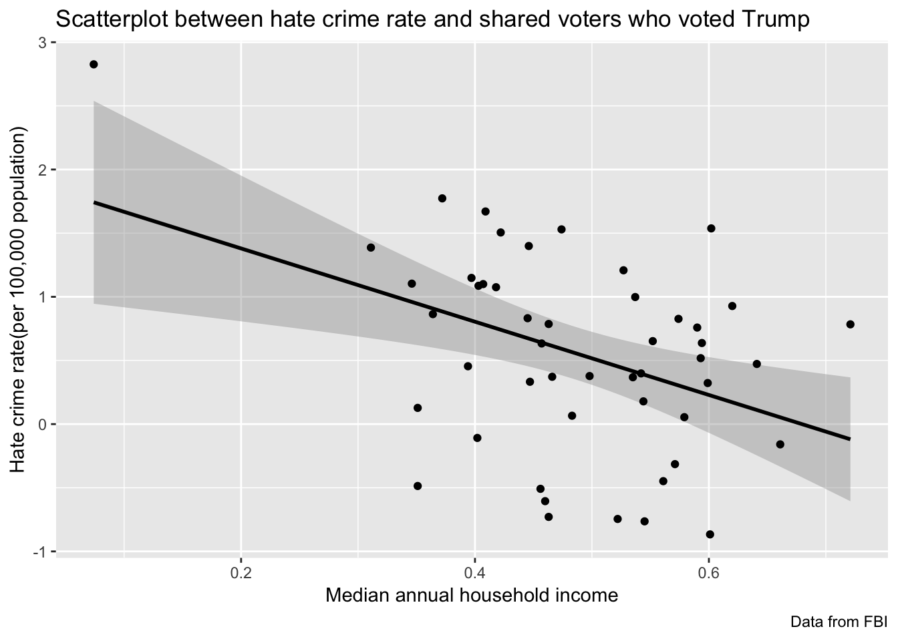

Since we found there is a significant increasement of hate crime rate in 2016, we would like to further explore the reason associated with this change. Therefore we found several datasets contain different factors relevant to the hate crime and combined them together. These factors include “Median annual household income”, “Share of the population that is unemployed”, “Share of the population with high school degree”, “Share of the population that are not U.S. citizens”, “Share of the population that is white”, “Share of 2016 U.S. presidential voters who voted for Donald Trump”.
| term | estimate | std.error | statistic | p.value |
|---|---|---|---|---|
| (Intercept) | -0.7447166 | 0.7347082 | -1.013622 | 0.3158453 |
| median_income | 0.0000217 | 0.0000123 | 1.761218 | 0.0845705 |
\[log\textrm{ crime_rate} = -0.74 + 0.000021 \textrm{median_income}\]
| term | estimate | std.error | statistic | p.value |
|---|---|---|---|---|
| (Intercept) | 1.3869442 | 0.817485 | 1.6965989 | 0.2318636 |
| share_voters_voted_trump34.60% | -0.2835536 | 1.156098 | -0.2452677 | 0.8291204 |
| share_voters_voted_trump35.10% | -1.5663112 | 1.001211 | -1.5644174 | 0.2581784 |
| share_voters_voted_trump36.40% | -0.5230337 | 1.156098 | -0.4524128 | 0.6953071 |
| share_voters_voted_trump37.20% | 0.3864254 | 1.156098 | 0.3342496 | 0.7699870 |
| share_voters_voted_trump39.40% | -0.9323571 | 1.156098 | -0.8064686 | 0.5046269 |
| share_voters_voted_trump39.70% | -0.2384773 | 1.156098 | -0.2062777 | 0.8556669 |
| share_voters_voted_trump40.20% | -1.4955529 | 1.156098 | -1.2936208 | 0.3250530 |
| share_voters_voted_trump40.30% | -0.3004614 | 1.156098 | -0.2598926 | 0.8192549 |
| share_voters_voted_trump40.70% | -0.2869402 | 1.156098 | -0.2481970 | 0.8271401 |
| share_voters_voted_trump40.90% | 0.2834753 | 1.156098 | 0.2452000 | 0.8291662 |
| share_voters_voted_trump41.80% | -0.3114971 | 1.156098 | -0.2694382 | 0.8128449 |
| share_voters_voted_trump42.20% | 0.1185531 | 1.156098 | 0.1025458 | 0.9276790 |
| share_voters_voted_trump44.50% | -0.5550149 | 1.156098 | -0.4800758 | 0.6785515 |
| share_voters_voted_trump44.60% | 0.0121932 | 1.156098 | 0.0105469 | 0.9925424 |
| share_voters_voted_trump44.70% | -1.0543865 | 1.156098 | -0.9120214 | 0.4580302 |
| share_voters_voted_trump45.60% | -1.8953164 | 1.156098 | -1.6394075 | 0.2428028 |
| share_voters_voted_trump45.70% | -0.7534746 | 1.156098 | -0.6517391 | 0.5814580 |
| share_voters_voted_trump46.00% | -1.9921553 | 1.156098 | -1.7231711 | 0.2269991 |
| share_voters_voted_trump46.30% | -1.3581359 | 1.001211 | -1.3564938 | 0.3077740 |
| share_voters_voted_trump46.60% | -1.0150990 | 1.156098 | -0.8780386 | 0.4725283 |
| share_voters_voted_trump47.40% | 0.1427868 | 1.156098 | 0.1235075 | 0.9129982 |
| share_voters_voted_trump48.30% | -1.3210820 | 1.156098 | -1.1427072 | 0.3715105 |
| share_voters_voted_trump49.80% | -1.0093608 | 1.156098 | -0.8730751 | 0.4746856 |
| share_voters_voted_trump52.20% | -2.1320678 | 1.156098 | -1.8441923 | 0.2064628 |
| share_voters_voted_trump52.70% | -0.1785657 | 1.156098 | -0.1544555 | 0.8914291 |
| share_voters_voted_trump53.50% | -1.0188171 | 1.156098 | -0.8812546 | 0.4711360 |
| share_voters_voted_trump53.70% | -0.3887270 | 1.156098 | -0.3362404 | 0.7686901 |
| share_voters_voted_trump54.20% | -0.9885892 | 1.156098 | -0.8551082 | 0.4825796 |
| share_voters_voted_trump54.40% | -1.2082515 | 1.156098 | -1.0451113 | 0.4056740 |
| share_voters_voted_trump54.50% | -2.1507852 | 1.156098 | -1.8603825 | 0.2039044 |
| share_voters_voted_trump55.20% | -0.7349850 | 1.156098 | -0.6357461 | 0.5899840 |
| share_voters_voted_trump56.10% | -1.8350309 | 1.156098 | -1.5872619 | 0.2533653 |
| share_voters_voted_trump57.10% | -1.7013199 | 1.156098 | -1.4716048 | 0.2789733 |
| share_voters_voted_trump57.40% | -0.5600586 | 1.156098 | -0.4844385 | 0.6759359 |
| share_voters_voted_trump57.90% | -1.3323467 | 1.156098 | -1.1524510 | 0.3682846 |
| share_voters_voted_trump59.00% | -0.6284986 | 1.156098 | -0.5436376 | 0.6411880 |
| share_voters_voted_trump59.30% | -0.8689023 | 1.156098 | -0.7515816 | 0.5307081 |
| share_voters_voted_trump59.40% | -0.7498833 | 1.156098 | -0.6486328 | 0.5831055 |
| share_voters_voted_trump59.90% | -1.0642161 | 1.156098 | -0.9205238 | 0.4544764 |
| share_voters_voted_trump60.10% | -2.2532197 | 1.156098 | -1.9489862 | 0.1906262 |
| share_voters_voted_trump60.20% | 0.1505050 | 1.156098 | 0.1301836 | 0.9083339 |
| share_voters_voted_trump62.00% | -0.4592262 | 1.156098 | -0.3972207 | 0.7295868 |
| share_voters_voted_trump64.10% | -0.9143535 | 1.156098 | -0.7908959 | 0.5118964 |
| share_voters_voted_trump66.10% | -1.5460423 | 1.156098 | -1.3372931 | 0.3129294 |
| share_voters_voted_trump67.80% | -2.0047318 | 1.156098 | -1.7340495 | 0.2250462 |
| share_voters_voted_trump7.40% | 1.4393462 | 1.156098 | 1.2450032 | 0.3392240 |
| share_voters_voted_trump72.10% | -0.6032057 | 1.156098 | -0.5217598 | 0.6538661 |

\[log\textrm{ crime_rate} = 2.03 - 3.06 \textrm{share_voters_voted_trump}\]